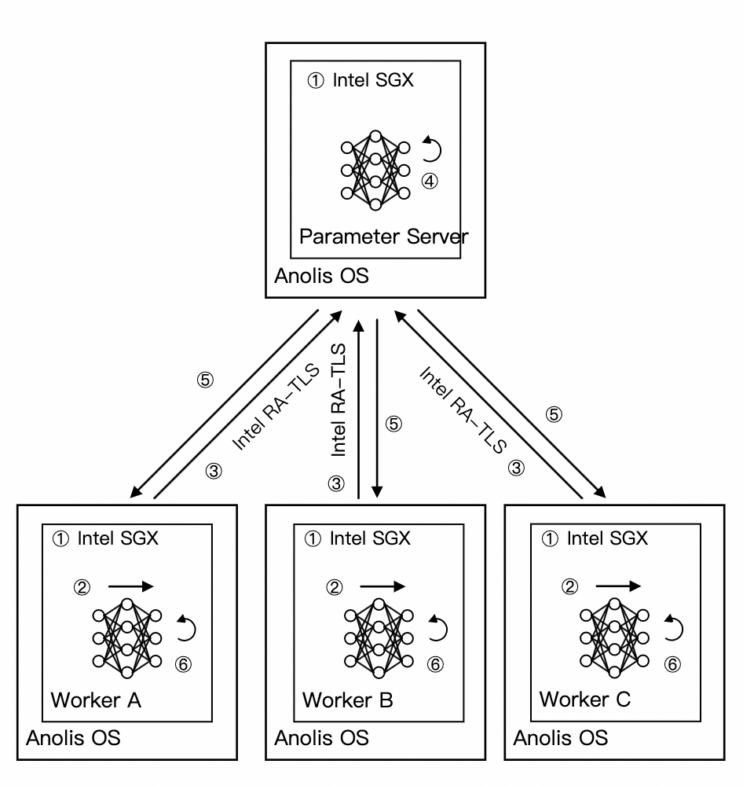

部署TensorFlow横向联邦学习
1 概述
本文介绍在Intel® SGX使能的平台，基于Anolis OS部署TensorFlow横向联邦学习。
2 背景信息
横向联邦学习是一种分布式的机器学习模型训练方案，该方案联合多个参与方在数据不出域的前提下完成模型的训练，保证了数据安全。
Intel® SGX (Software Guard Extension) 技术，提供了SGX加密计算能力，打造了基于硬件级别的更高安全等级的可信机密环境，保障关键代码和数据的机密性与完整性不受恶意软件的破坏。
本实践为开发者使用Anolis OS提供了参考实现，您可以通过本文获取以下信息：
- 对基于SGX加密技术实现的端到端的全数据生命周期安全方案有整体了解。
- 对于使用Anolis OS的开发者，可直接参照本实践部署和开发脚本。
- 为使用安全增强型云服务器SGX开发者提供可行性参考框架和脚本，开发者可根据本实践步骤快速了解安全增强型裸金属云服务器及环境搭建部署流程，轻松上手使用。
3 实践架构

本实践涉及了两种参与方：参数服务器端（parameter server）和客户端（worker）。
- 参数服务器端：存放模型参数，并利用客户端发来的梯度信息更新本地参数。
- 客户端：利用本地数据集，完成神经网络的前向传播和反向传播，并通过服务器端获取最新的模型参数。
说明：为了方便开发者部署，本实践将上述两种参与方部署在同一台云服务器中。
本实践使用到的主要组件：
- LibOS：Gramine是一款轻量级LibOS，结合Intel SGX加密保护技术，提供了内核能力定制，运行资源消耗少，具备非常好的ABI兼容性，极大降低了原生应用移植到SGX环境的成本，做到了应用程序不修改或者极少的修改便能运行在SGX环境中。更多信息，请参考Gramine。
- TensorFlow训练框架：TensorFlow是Google开源的机器学习平台，本实践采用TensorFlow的分布式训练框架作为横向联邦学习的训练框架。更多信息，请参考TensorFlow官网。
- Docker容器引擎：为了方便部署推理，本实践将三个参与方运行在Docker容器中，通过Docker的命令方式运行推理服务。
本实践架构说明： Anolis OS SGX端需要向Intel证书缓存服务（Provisioning Certificate Caching Service，PCCS）获取PCK（Provisioning Certification Key）证书。Intel SGX拥有一个密钥用于Enclave签名，该密钥对于处理器或者平台是唯一的，密钥的公开部分就是PCK公钥。另外客户端也会向PCCS获取一些信息，比如TCB信息、Quote Enclave认证的信息、CRL信息等用于对SGX Enclave的认证。
训练阶段可以分为以下几个步骤：
① 利用SGX平台，参与方运行在不同的Enclave中。
② 客户端根据其Enclave环境中的本地数据计算梯度信息。
③ 客户端通过RA-TLS向参数服务器发送梯度。
④ 参数服务器进行梯度聚合，计算并更新全局模型参数。
⑤ 参数服务器将模型参数发送给客户端。
⑥ 客户端更新局部模型参数。
训练过程中会不断重复步骤②-⑥ 。由于客户端和参数服务器运行在内存加密的Enclave环境中，同时RA-TLS通信方案保证了传输过程中的数据安全，因此该方案可以保证在完整的训练周期中的数据安全。
4 实践任务和配置
本实践提供图像分类和推荐系统两种训练任务类型。图像分类任务采用cifar-10数据集训练ResNet网络。推荐系统任务采用开源广告点击率数据集训练DLRM网络。
本实践的环境配置如下：
- 服务器配置：
- 图像分类任务：单个节点加密内存：8G
- 推荐系统任务：单个节点加密内存：32G
- 操作系统： anolisos:8.4-x86_64
- SGX软件栈
- Docker
5 实践部署
本实践提供两种部署方式：下载镜像和通过Dockerfile编译镜像。
5.1 下载镜像方式
5.1.1 下载Docker镜像
docker pull intelcczoo/horizontal_fl:anolis_sgx_latest
docker tag intelcczoo/horizontal_fl:anolis_sgx_latest anolisos_horizontal_fl:latest
5.1.2 启动Docker容器
下载实践代码
git clone https://github.com/intel/confidential-computing-zoo.git
cd confidential-computing-zoo/cczoo/horizontal_fl/
图像分类：
启动三个Docker容器（ps0、worker0、worker1）。如果在本地运行，请在<PCCS ip addr>中填写本地PCCS服务器地址。如果在云端运行，请在进入Docker容器后修改/etc/sgx_default_qcnl.conf文件中的PCCS服务器地址，填写云端的PCCS地址，忽略启动脚本中的<PCCS ip addr>参数。
./start_container.sh <ps0/worker0/worker1 > <PCCS ip addr> anolisos
推荐系统：
启动五个Docker容器（ps0、worker0、worker1、worker2、worker3）。如果在本地运行，请在<PCCS ip addr>中填写本地PCCS服务器地址。如果在云端运行，请在进入Docker容器后修改/etc/sgx_default_qcnl.conf文件中的PCCS服务器地址，填写云端的PCCS地址，忽略启动脚本中的<PCCS ip addr>参数。
./start_container.sh <ps0/worker0/worker1 > <PCCS ip addr> latest anolisos
5.1.3 编译应用
图像分类：
cd /image_classification
./test-sgx.sh make
推荐系统：
cd /recommendation_system
./test-sgx.sh make
编译过程中会生成MR_ENCLAVE，MR_SIGNER，ISV_PROD_ID，ISV_SVN。
5.2 编译镜像方式
5.2.1 下载实践源码
在已创建好的SGX实例中，下载本实践所使用到的代码。
git clone https://github.com/intel/confidential-computing-zoo.git
cd confidential-computing-zoo/cczoo/horizontal_fl/
针对推荐系统任务，需要下载数据集，数据集保存在Google Drive中，您可以通过以下方式下载：
wget --load-cookies /tmp/cookies.txt "https://docs.google.com/uc?export=download&confirm=$(wget --quiet --save-cookies /tmp/cookies.txt --keep-session-cookies --no-check-certificate 'https://docs.google.com/uc?export=download&id=1xkmlOTtgqSQEWEi7ieHWYvlAl5bSthSr' -O- | sed -rn 's/.*confirm=([0-9A-Za-z_]+).*/\1\n/p')&id=1xkmlOTtgqSQEWEi7ieHWYvlAl5bSthSr" -O train.tar && rm -rf /tmp/cookies.txt
或者通过百度网盘下载。train.tar数据集文件需保存在recommendation_system/dataset目录下。
5.2.2 编译Docker镜像
可以通过参数<image_classification/recommendation_system>来指定编译图像分类任务或者推荐系统任务的应用程序。
./build_docker_image.sh <image_classification/recommendation_system> latest anolisos
5.2.3 启动Docker容器
图像分类：
启动三个Docker容器（ps0、worker0、worker1）。如果在本地运行，请在<PCCS ip addr>中填写本地PCCS服务器地址。如果在云端运行请在进入Docker容器后修改/etc/sgx_default_qcnl.conf文件中的PCCS服务器地址，填写云端的PCCS地址，忽略启动脚本中的<PCCS ip addr>参数。
./start_container.sh <ps0/worker0/worker1> <PCCS ip addr> latest anolisos
cd /image_classification
推荐系统：
启动五个Docker容器（ps0、worker0、worker1、worker2、worker3）。如果在本地运行，请在<PCCS ip addr>中填写本地PCCS服务器地址。如果在云端运行请在进入Docker容器后修改/etc/sgx_default_qcnl.conf文件中的PCCS服务器地址，填写云端的PCCS地址，忽略启动脚本中的<PCCS ip addr>参数。
./start_container.sh <ps0/worker0/worker1/worker2/worker3> <PCCS ip addr> latest anolisos
cd /recommendation_system
6 实践运行
6.1 图像分类
在多台服务器上部署不同分布式节点的情况下，可以通过修改Docker容器中/image_classification/目录下的train.py训练脚本来配置分布式节点IP地址：
tf.app.flags.DEFINE_string("ps_hosts", "['localhost:60002']", "ps hosts")
tf.app.flags.DEFINE_string("worker_hosts", "['localhost:61002','localhost:61003']", "worker hosts")
并在修改后重新编译应用：
cd /image_classification
./test-sgx.sh make
编译过程中会生成MR_ENCLAVE，MR_SIGNER，ISV_PROD_ID，ISV_SVN。
配置Docker容器中/image_classification/下的dynamic_config.json文件，填入待通信方节点在编译应用阶段生成的MR_ENCLAVE，MR_SIGNER，ISV_PROD_ID，ISV_SVN的值，如：
{
"verify_mr_enclave" : "on",
"verify_mr_signer" : "on",
"verify_isv_prod_id" : "on",
"verify_isv_svn" : "on",
"sgx_mrs": [
{
"mr_enclave" : "1e4f3efafac6038dadaa94fdd248b93c82ae9f0a16642ff4bb07afe442aac56e",
"mr_signer" : "5add213ac35413033647621e2fab91edcc8b82f840426803feb8a603be2ce8d4",
"isv_prod_id" : "0",
"isv_svn" : "0"
}
]
}
修改完成后，在每个容器中运行相应的作业脚本。
./test-sgx.sh <ps0/worker0/worker1>
您可以从终端查看训练过程中的日志信息，以确认训练在正常进行。训练过程中生成的模型文件将保存在model文件夹中，其中变量值的相关信息存放在参与方ps0的model/model.ckpt-data中，计算图结构的相关信息存放在参与方worker0的model/model.ckpt-meta中。
6.2 推荐系统
在多台服务器上部署不同分布式节点的情况下，可以通过修改Docker容器中/ecommendation_system/目录下的ps0.py、worker0.py、worker1.py、worker2.py、worker3.py训练脚本来配置分布式节点IP地址：
tf.app.flags.DEFINE_string("ps_hosts", "['localhost:70002']", "ps hosts")
tf.app.flags.DEFINE_string("worker_hosts", "['localhost:71002','localhost:71003','localhost:71004','locaxlhost:71005']", "worker hosts")
并在修改后重新编译应用：
cd /recommendation_system
./test-sgx.sh make
编译过程中会生成MR_ENCLAVE，MR_SIGNER，ISV_PROD_ID，ISV_SVN。
配置Docker容器中/recommendation_system/目录下的dynamic_config.json文件，填入待通信方节点在编译应用阶段生成的MR_ENCLAVE，MR_SIGNER，ISV_PROD_ID，ISV_SVN的值，如：
{
"verify_mr_enclave" : "on",
"verify_mr_signer" : "on",
"verify_isv_prod_id" : "on",
"verify_isv_svn" : "on",
"sgx_mrs": [
{
"mr_enclave" : "8b302bbf37ce27f82a3aa95b7daffe4b104e1faeb05e566dc8ded6ab04359684",
"mr_signer" : "5add213ac35413033647621e2fab91edcc8b82f840426803feb8a603be2ce8d4",
"isv_prod_id" : "0",
"isv_svn" : "0"
}
]
}
worker节点仅需要与ps节点通信，因此只需要配置一组校验值。ps节点需要与所有worker节点通信，因此可能需要配置多组校验值。
修改完成后，在每个容器中运行相应的作业脚本。
./test-sgx.sh <ps0/worker0/worker1/worker2/worker3>
您可以从终端查看训练过程中的日志信息，以确认训练在正常进行。训练过程中生成的模型文件将保存在model文件夹中，其中变量值的相关信息存放在参与方ps0的model/model.ckpt-data中，计算图结构的相关信息存放在参与方worker0的model/model.ckpt-meta中。